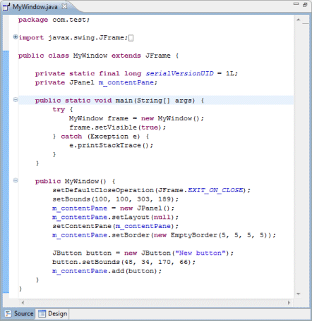
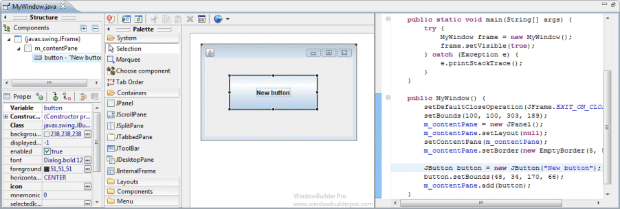
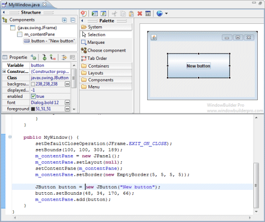

|
The Source View is where you write code by hand and review the code generated by the tool. The Source View is simply the standard Java Editor supplied by Eclipse and provided as a page within the editor. It offers all of the same features as the standard Java Editor including:
 This Editor Layout preference controls the position of the Source View relative to the Design View. By default, they are "on separate notebook tabs" labeled Source and Design (you can select which page is first). Additional options are provided to show the Source View and Design View side by side or one above the other.  
|